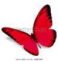

<!-- begin bottom -->
	<div id="templatemo_footer">
<!--  -->
    Copyright © 2017 Red Butterfly Books <a href="http://www.iwebsitetemplate.com" target="_parent">Website Templates</a> by <a href="http://www.templatemo.com" target="_blank">templatemo.com</a>    </div>
        
</div>
<div align=center>This template  downloaded form <a href='http://all-free-download.com/free-website-templates/'>free website templates</a>
</div>
<!-- end div for butterfly that follows mouse pointer -->
<!--</div> -->
<script>
// initialze vars
frameRate    =  30;
timeInterval = Math.round( 1000 / frameRate );
relMouseX    = 0;
relMouseY    = 0;
mouse_offsetX = 20;
mouse_offsetY = 20;

$(document).ready(function(){
  // get the stage offset
  offset = $('#sketch').offset();

  // start calling animateFollower at the 'timeInterval' we calculated above
  atimer = setInterval( "animateFollower()", timeInterval );
});

// mouseover function - get relative mouse X and Y
$(document).mousemove( function(e) {
  mouseX = e.pageX + mouse_offsetX;
  mouseY = e.pageY + mouse_offsetY;
  relMouseX = mouseX - offset.left;
  relMouseY = mouseY - offset.top;
} );

// move the image where the mouse is
// this function is called by the setInterval command above to run
// at a rate of 30 frames per second
function animateFollower() {

  $('#follower').css('left', relMouseX);
  $('#follower').css('top', relMouseY);
}

</script>
</body>
</html>
